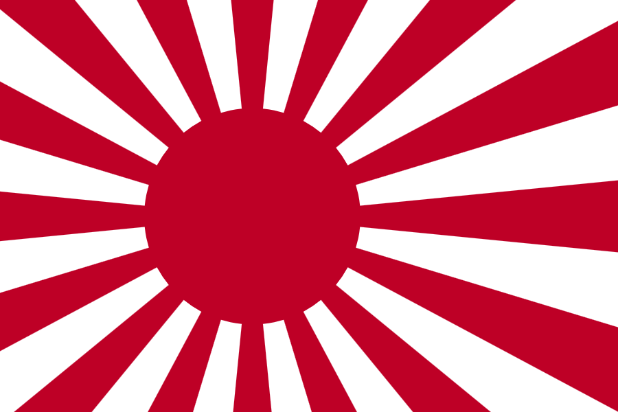

返回主页
日本旭日旗

日本副首相麻生太郎2013年7月29日晚在东京发表演讲时称日本应效仿二战爆发前德国纳粹政府的做法，在谁都没注意的时候“不知不觉地”修改宪法。德国魏玛宪法不知不觉就发生了变化，在谁都没有注意的时候发生了变化。我们学习这种方式怎么样？不希望在狂躁不安的局面下作出决定。应该等到舆论已经处于比较冷静的状态时再去完成。等到国民们不再争论，等到他们逐渐接受。日本副首相麻生太郎2013年7月29日晚在东京发表演讲时称日本应效仿二战爆发前德国纳粹政府的做法，在谁都没注意的时候“不知不觉地”修改宪法。德国魏玛宪法不知不觉就发生了变化，在谁都没有注意的时候发生了变化。我们学习这种方式怎么样？不希望在狂躁不安的局面下作出决定。应该等到舆论已经处于比较冷静的状态时再去完成。等到国民们不再争论，等到他们逐渐接受。
日本不知不觉地有了航母、研制核武，生化武器（731）估计依然处于世界领先水平。呜呼哀哉！
日本旭日旗很漂亮，纳粹的标志也很美，犹如罂之粟，美丽迷人。种族主义和爱国心相当危险！
旭日旗和纳粹鹰
version:1.0; jobnet@188.com © retter2012.com